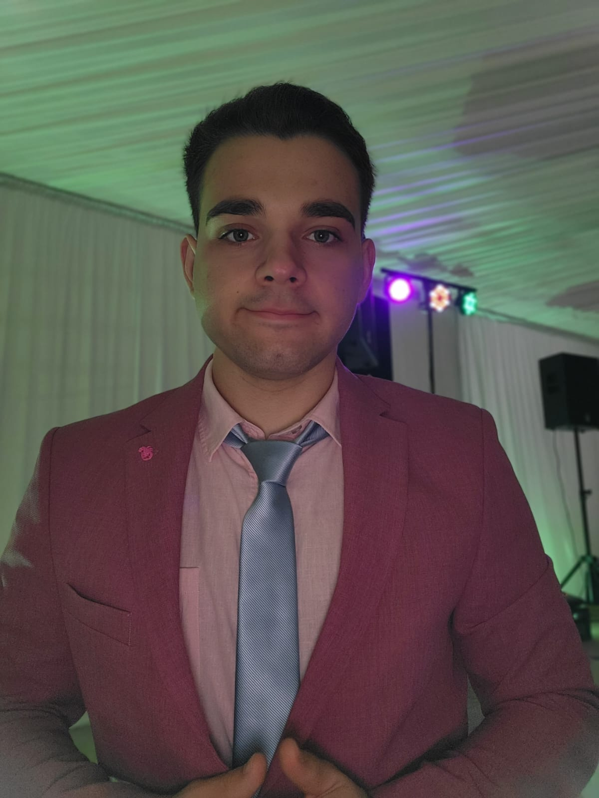

Website Personal Vladutu Alexandru
BIOGRAFIE

Salut! Sunt Vladutu Alexandru, student în anul II la Facultatea de
Automatică și Calculatoare din cadrul Universității Politehnica din
București.
Originar din Turnu Măgurele, Teleorman, locuiesc în prezent în campusul
Regie, căminul P22. Am absolvit un liceu cu profil real, unde am
descoperit o pasiune profundă pentru tehnologie, fizică și matematică.
Convingerea mea că Politehnica este locul ideal pentru a-mi cultiva
aceste interese m-a adus aici, unde mă bucur de fiecare provocare și
oportunitate de învățare. M-am adaptat rapid la viața universitară și
aștept cu nerăbdare să explorez noi subiecte și să continui călătoria de
cunoaștere în domeniul tehnologiei și ingineriei.
HOBBY-URI
SA CITESC
In afara orelor petrecute în studiul matematicii, fizicii și
informaticii, îmi găsesc liniștea în paginile cărților de istorie și
filosofie. Anul trecut am reușit să citesc 42 de cărți, un număr mai mic
decât mi-aș fi dorit, dar inevitabil din cauza cerințelor universitare,
care îmi solicită mult timp. Dimineața este momentul meu preferat pentru
lectură, și mi-am propus să parcurg constant 3-4 cărți lunar, o
provocare pe care încerc să o împlinesc cu dedicație.
Cartiile mele preferate sunt:
 Padurea Spanzuratilor. Editura Litera
Padurea Spanzuratilor. Editura Litera
 Platon.Opere Integrale I.Humanitas
Platon.Opere Integrale I.Humanitas
 Cel mai bogat om din babilon.Editura Litera
Cel mai bogat om din babilon.Editura Litera
SA FAC SPORT
Am început să fac sport de mic, iar copilăria la țară mi-a oferit o
libertate neprețuită – să alerg liber, să explorez, și să mă bucur de
natură. Fotbalul este o pasiune constantă, un joc care îmi aduce energie
și bucurie. Când timpul îmi permite, profit de răcoarea serilor pentru a
ieși la alergat, savurând momentele de liniște și reconectare cu natura.